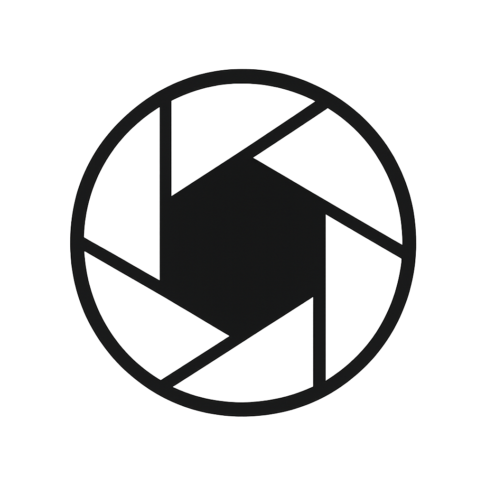
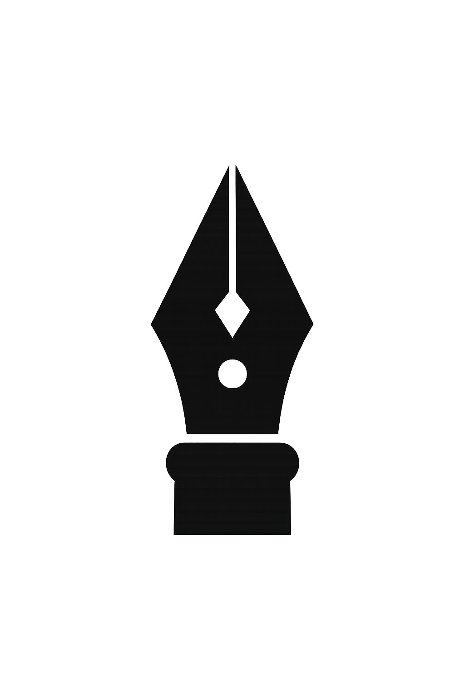
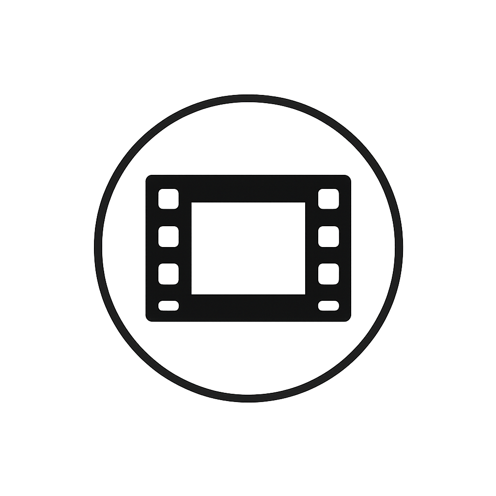

📦
Archived Version (2024)
— This is the original photography-focused site.
View the current portfolio →
Nino Chavez
Visual Storyteller
I capture energy in motion — from tournament grit to quiet moments between plays.


